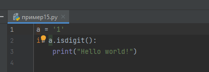
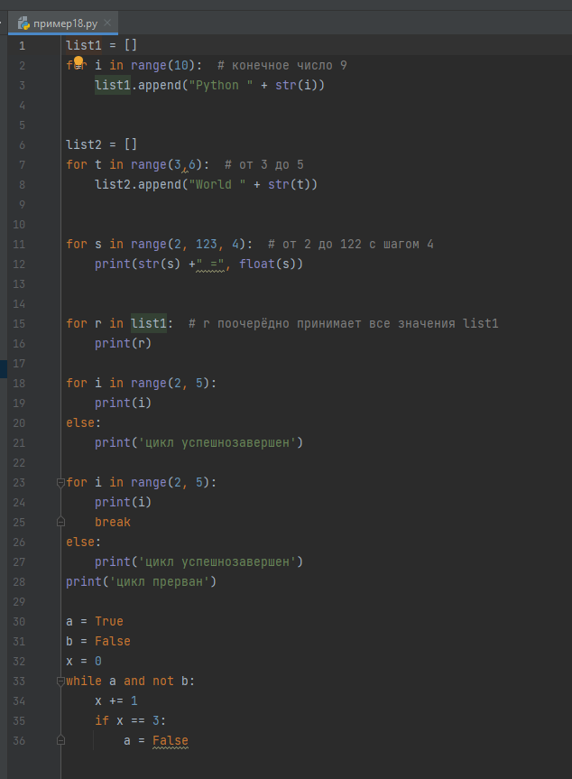

Меню
Глава II. Алгоритмические конструкции. Логические операции.
Оглавление
Параграф 1. Виды алгоритмических конструкций.
Существует 3 типа алгоритмических конструкций: следование, ветвление, цикл.
Алгоритмическая конструкция «следование» представляет собой прямое выполнение последовательно записанных команд. Во всех выше приведённых примерах использовалась конструкция «следование».
Ветвление – это конструкция, имеющая условие, которое может быть только верным или неверным, и от этого зависит последовательность команд.
Цикл – это конструкция, имеющая условие, пока это условие является верным, все команды в теле цикла повторяются.
Алгоритмические конструкции тоже одна из важнейших частей яп, наря ду с переменными.
Параграф 2. Ветвление.
Перед тем как приступить к конструкции «ветвление», стоит оговорить, что если вам нужно занести в переменную её же изменённое значение, то можно использовать такой синтаксис:

Условием конструкции может быть сравнение, для этого используют знаки <, >, ==, != - не равно.
Также условием может быть любая команда, возвращающая значение True/False.


Как понятно из примеров, ветвление начинается со слова if, затем следует условие, а потом с новой строки, с отступом в одну табуляцию (Tab*1/Space*4), команды, которые нужно выполнить, если условие окажется верным. Если нужно продлить конструкцию на ещё одно условие используется elif. Else (англ. “иначе”) обычно закрывает всю конструкцию. Если вам очень хочется закончить конструкцию на else, вы можете использовать pass. В конструкции не обязательно должны присутствовать else и elif. Ветвление работает таким образом, что если он
находит первое верное условие, все остальные команды, входящие в конструкцию, не выполняются. Можно также передать несколько условий через and, or, и отрицание not
Параграф 3. Циклы.
В Python есть два варианта циклов: с условием и циклы, повторяющиеся определённое кол-во раз.
Цикл while имеет условие и выполняется, пока условие верно.
Цикл while определяется так:
While //условие//:
//тело цикла//

Break завершает цикл while.
Цикл for присваивает переменной поочерёдно все значения переданного списка
Команда range создаёт список

break завершает и цикл for.
После цикла fore может стоять блок else, он выполнится только если цикл успешно закончился
логические выражения можно объединить используя конъюнкцию, дизъюнкцию и отрицание
and – конъюнкция
or – дизъюнкция
not – отрицание
Итоги главы
В этой главе мы узнали, что такое алгоритмические конструкции, их виды, условные операции и как они работают.